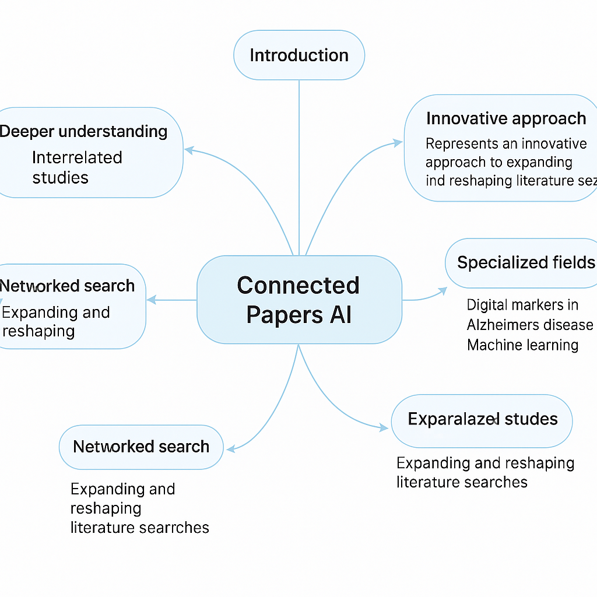
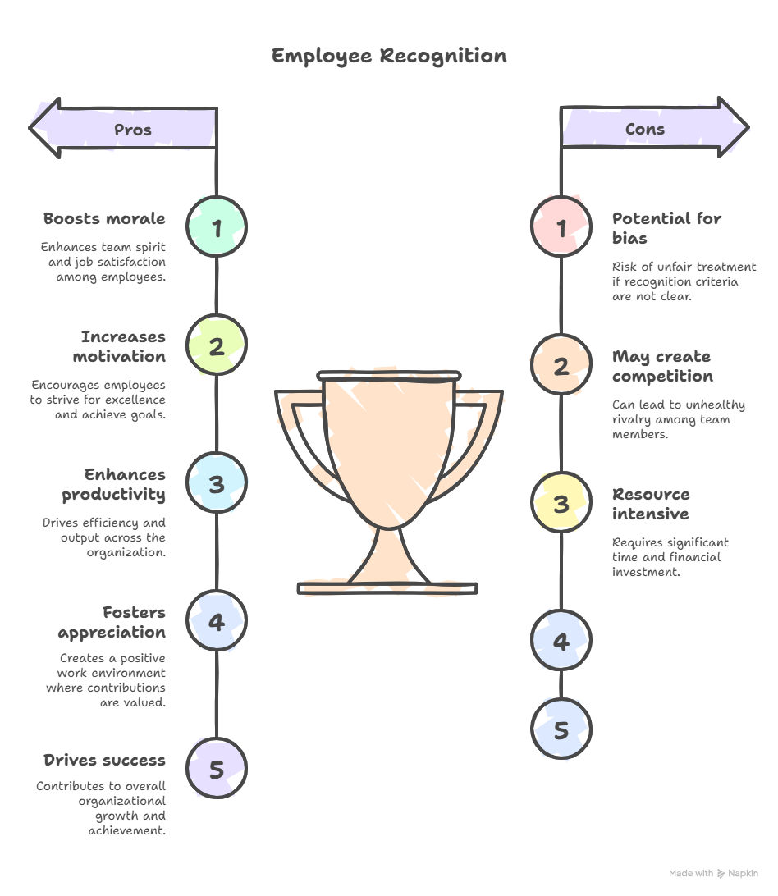
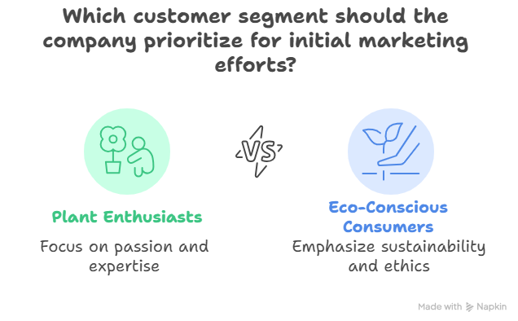
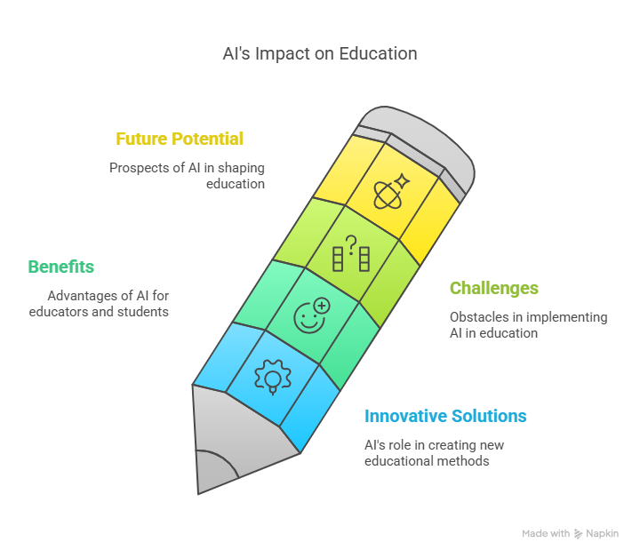
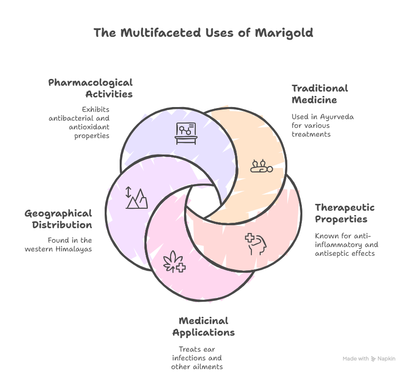

Empowering learning with artificial intelligence
Exit Form: Google Form
(Include your curated AI images here as needed
Connected Paper AI offers an innovative way to conduct literature reviews, helping uncover links between studies — particularly useful in fields like machine learning and Alzheimer’s research.
“How AI transformed my way of teaching or learning”
AI has revolutionized how I teach and learn — making it more personalized, efficient, and engaging. It gives instant answers, tailored feedback, and boosts confidence. As a teacher, I now focus more on guiding and inspiring students. The blend of human and machine intelligence fosters inclusive, dynamic education.